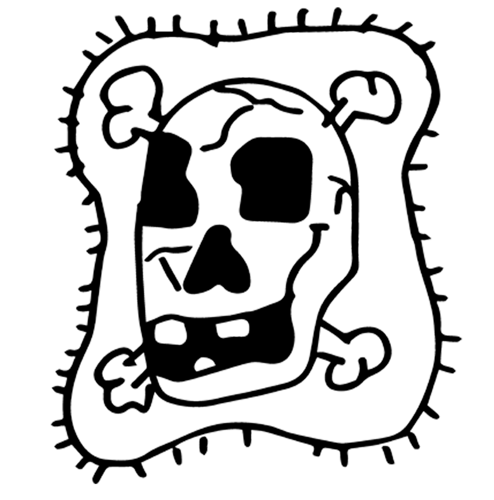

La enfermedad mental forma parte de la historia del hombre. Hoy como ayer, la agresividad, la violencia, el miedo a los locos puede resurgir de imprevisto en una sociedad. El psiquiatra Roger Gentis lanzaba el año pasado un grito de alarma: ¿No es acaso posible la reconciliación entre ellos y nosotros? ¿Entre nosotros y nosotros mismos?
La locura es también un hecho de civilización. En la sociedad de la Edad Media, el loco encontraba su lugar. La época clásica, en nombre de la razón, va a reducir al silencio la locura barroca de la cual el Bosco y Brueghel fueron testigos. Es entonces la época del gran confinamiento: el loco, el vagabundo, el criminal es puesto detrás de los muros, a menudo los mismos muros.
1794, la fecha fetiche en la que el francés Pinel libera de sus cadenas a los locos de París. Un movimiento similar tiene lugar en Inglaterra con Samuel Tuke. Comienza una nueva página de la historia de la locura. El siglo XIX va a curar no al loco, sino a la locura. El loco se convierte en objeto de cuidados, de estudios; nacimiento del psiquiatra, la ciencia interviene. Esta primera revolución psiquiátrica encierra a médico y enfermo en el interior de la institución y en los límites de conocimientos fisiológicos bastante limitados.
A principios de siglo, a pesar de violentas oposiciones, nuevas ideas penetran en la psiquiatría y conmueven profundamente el enfoque de la enfermedad mental: Sigmund Freud y el psicoanálisis.
Paralelamente a este desarrollo del conocimiento del psiquismo humano, la química y la biología abren nuevas vías: los tratamientos de choque. En 1927, la insulina. En 1938, el electroshock, que conoce un auge extraordinario.
Al final de la guerra del 39-45, una toma de conciencia atraviesa la psiquiatría. En Alemania, se exterminó a miles de enfermos mentales. En Francia, 40 000 internados murieron de frío y de hambre. En 1953, los enfermos todavía están encadenados al suelo de sus celdas, la camisa de fuerza es habitual. Entonces, la química interviene de nuevo. Hacia 1950 se descubre, por azar, la clorpromazina, es decir, los neurolépticos. A partir de ese momento se puede actuar mediante medicamentos sobre los centros nerviosos de la base del cerebro, calmar la angustia y la agitación, atenuar el delirio. La camisa de fuerza es reemplazada por una camisa de fuerza química, dicen algunos.
La alternancia fisiología-psicología continúa. En los años 60, jóvenes psiquiatras provocan un movimiento que cuestiona radicalmente a la psiquiatría, la enfermedad mental y la sociedad tecnológica y capitalista: la antipsiquiatría.
Entrevistador: Desde hace algún tiempo, desde hace algunos meses, desde hace un año, se habla mucho en Francia de lo que se llama la antipsiquiatría, ese movimiento que nació en Inglaterra y en Italia. ¿Qué valor le otorga usted a esta especie de boga, casi de moda, de la antipsiquiatría?
Ajurriaguera: Yo creo que en la antipsiquiatría, al leer lo que dicen, ya sea las publicaciones de Cooper o las de Basaglia, hay muchas cosas para tomar. Pero, en realidad, yo personalmente encuentro que esta antipsiquiatría que intenta transformar el mundo —lo cual es el objetivo de todos nosotros, y el mío en particular—, bueno, puede producir una especie de freno para el tratamiento de nuestros enfermos actuales. Y la vida del hombre es demasiado corta como para que intentemos transformar el mundo cuando tenemos enfermos cotidianos que demandan nuestra ayuda. Debemos abocarnos a tratar a estos enfermos y, por otra parte, si es posible, a transformar el mundo.
Así como es irrazonable cuestionar la dimensión social y política que nuestra sociedad hace pesar sobre la enfermedad mental, es imposible rechazar el aporte científico. Evitemos un dualismo simplista, pero reconozcamos este doble aspecto. En el servicio de investigación de una clínica de la Suiza francófona, abordaremos el problema químico y fisiológico. Luego, veremos lo que la libertad, lo vivido, la dimensión psicoanalítica y social pueden hacer por la enfermedad mental en la institución.
Entrevistador: ¿Qué se puede decir hoy en día de las posibilidades de intervención química, fisiológica, farmacológica en psiquiatría?
Ajurriaguera: Bueno, desde hace algún tiempo y desde hace ya numerosos años, existen las intervenciones de lo que se llamaba los neurolépticos, y que han modificado, de todos modos, el campo de estas instituciones de tipo psiquiátrico. Los neurolépticos, que comenzaron con el Largactil, y que permitieron al mismo tiempo curar a los enfermos y permitieron, en parte, modificar la atmósfera hospitalaria. Porque en el fondo, incluso en el marco psiquiátrico, se tenía miedo de los enfermos. Y eso fue al mismo tiempo una buena psicoterapia para el personal, a la vez que un tratamiento para los enfermos.
Entrevistador: ¿Cuál es el tipo de enfermedad que mejor se puede tratar, curar, hoy en día mediante el medicamento?
Ajurriaguera: Eso depende. Hay diversos tipos de enfermedades que se pueden tratar con medicamentos. Incluso la esquizofrenia se puede tratar con medicamentos, pero con el inconveniente de que no conocemos, o conocemos muy mal, el problema metabólico que plantea la esquizofrenia. Y en la Unión Soviética se dedican a estudiar estos problemas biológicos, y en América también. Y en el conjunto, creo que en Francia, y en particular en Suiza, se dedican mucho más al estudio de la maníaco-depresiva, que es una enfermedad que presenta, como tal, características biológicas, es decir, una enfermedad cíclica en la cual las fases de depresión aparecen por períodos, o bien existe una alternancia entre los períodos de depresión y los períodos maníacos, y de la cual disponemos actualmente de un arsenal terapéutico que es considerable. Y no solo tenemos un arsenal terapéutico, sino que conocemos cómo actúan estas terapéuticas. Mientras que para el neuroléptico, nuestro conocimiento no es de la misma claridad, porque conocemos mucho menos bien el metabolismo de la esquizofrenia.
Hemos elegido para ilustrar la dimensión biológica de la psiquiatría actual el ejemplo de la terapéutica de las depresiones. El inicio de la era moderna en este campo está marcado por la utilización de la reserpina como hipotensor. La reserpina es un alcaloide extraído de una planta, Rauwolfia serpentina, cuya acción sobre el sistema nervioso central ya era conocida por la medicina tradicional hindú. Pero durante su utilización contra la hipertensión arterial, los clínicos notaron que podía producir depresiones en los sujetos predispuestos.Fue a partir del animal que se elucidaron los mecanismos de acción de la reserpina.
Médico/investigador: El componente noble del sistema nervioso central está formado por las neuronas. Estas células son del orden de magnitud de la centésima de milímetro. Están especializadas en la transmisión de la información. El soporte de esta información son las corrientes de acción, o influjo nervioso, que se transmiten de un punto a otro a lo largo de la neurona por un fenómeno de despolarización. Uno de los fenómenos cruciales de la fisiología del sistema nervioso central es el paso de una neurona a la otra, ya que existe una no-continuidad entre las neuronas. Este paso se realiza por intermedio de mediadores humorales que son secretados por la terminación presináptica y que van a determinar, al fijarse sobre los receptores de la célula siguiente, la despolarización de la neurona siguiente y, por consiguiente, la transmisión de la información.
Vamos a examinar más de cerca el mecanismo de esta transmisión sináptica. Tenemos dos principales depósitos de acumulación de estos mediadores: el pool de reserva, verdadera cisterna, y el pool presináptico, de donde van a ser secretadas las gotitas de mediador fuera de la célula. Estas atraviesan la sinapsis y vienen a fijarse sobre los receptores de la neurona siguiente. Su fijación determina la transmisión del influjo nervioso, como lo hemos visto hace un momento. El destino de estos mediadores, cuando han cumplido su función de transmisión, es doble: por una parte, van a ser destruidos por una enzima; por otra parte, van a ser reabsorbidos por la célula para entrar en un nuevo ciclo donde servirán una segunda o una tercera vez para transmitir el influjo nervioso.
Ciertos medicamentos antidepresivos, como los tricíclicos, es decir, el Tofranil, actúan a este nivel e impiden el reciclaje de estas monoaminas, de modo que permanecen más tiempo a nivel de los receptores y su acción se ve reforzada. Otros medicamentos, como los inhibidores de la monoaminooxidasa, actúan a nivel del pool de reserva, es decir, de la cisterna. Como toda cisterna, esta tiene un rebosadero. Cuando las monoaminas salen de la cisterna, son destruidas por una enzima: la MAO. Si se puede inhibir esta enzima mediante un inhibidor de la monoaminooxidasa, todo el conjunto de mediadores debe pasar por el pool presináptico y, por lo tanto, funcionar como activadores sinápticos, lo que refuerza igualmente la acción de esta neurona.
Se constata que tanto la reserpina como los medicamentos antidepresivos interfieren con el metabolismo de las monoaminas. Por lo demás, los medicamentos útiles en la depresión del hombre tienen una acción antireserpina en el animal. La psiquiatría no había esperado estos conocimientos biológicos para poner a punto empíricamente un tratamiento eficaz de la depresión. Junto a las otras dimensiones de la terapéutica, siempre necesarias, el electroshock fue y sigue siendo un tratamiento eficaz. Parece ser, por lo demás, que este tratamiento clásico interfiere también con las monoaminas, acelerando su metabolismo.
Actualmente, el metabolismo de las monoaminas debe ser estudiado en el enfermo depresivo mediante análisis en la sangre y la orina. Se puede esperar identificar así el trastorno o los trastornos bioquímicos que están en la base de ciertas formas de depresión en los enfermos. Estos enfermos representan más de 15.000 hospitalizados en Suiza, más de 120.000 en Francia. Esta es la dimensión del problema de la institución psiquiátrica.
Entrevistador: El abordaje del enfermo no puede hacerse de una sola manera; es decir, ya sea por lo vivido, por el marco en el que se lo coloca, o bien por el enfoque farmacológico y biológico.
Ajurriaguera: No, yo creo que eso no existe; esa separación es una separación absurda. Somos médicos, y como médicos actuamos con todo lo que tenemos, con todo nuestro arsenal terapéutico. Y, de hecho, si tenemos un enfermo neurótico, intentamos disminuir los síntomas, una sintomatología que molesta, y utilizamos tratamientos de tipo psicoterapéutico. Y para el conjunto de la institución misma, utilizamos una psicoterapia institucional. Ya sea en el marco de los pabellones o en otros marcos. A partir del momento en que hacemos un diagnóstico en el cual la psicoterapia tiene un valor, la utilizamos.
Entrevistador: Ahora bien, precisamente, usted ha utilizado las palabras "psicoterapia institucional", que es un movimiento que se desarrolló en torno a un pequeño número de personas en Francia. Para usted, ¿qué representa esta idea de psicoterapia institucional?
Ajurriaguera: Creo que ocurrió algo muy importante en Francia en un momento dado, y sobre todo inmediatamente después de la guerra, cuyo punto de partida fue Saint-Alban, un pequeño hospital psiquiátrico, que fue dirigido sucesivamente por Balvet, más tarde por Tosquelles y más tarde por Bonnafé. Creo que se produjo allí una especie de toma de conciencia. Lo que nosotros llamábamos en la Liberación —ya que nos reuníamos junto con Bonnafé y los demás— una especie de revolución psiquiátrica. Era la toma de conciencia de que el enfermo no era solo un sujeto afectado por una enfermedad, sino que era un hombre enfermo, y que había que cambiar completamente la organización institucional. Es decir, que la primera fase de esta evolución fue modificar el marco, movilizar, y no considerar que la represión por temor o la represión por la ley fuera un medio terapéutico. Y para ello, fue necesario crear justamente una apertura e intentar encontrar en nuestro oficio el sentido de la noción de libertad.
Hace 18 años, un joven psiquiatra, el doctor Jean Oury, fundó con algunos amigos y muy poco dinero una clínica psiquiátrica, comprando un pequeño castillo sin gran valor y estableciéndose allí con una veintena de enfermos. La clínica de La Borde, en Cour-Cheverny, cerca de Blois, en el Loire. Hoy en día, la clínica de La Borde y el movimiento de psicoterapia institucional son conocidos, discutidos, admirados y criticados en los medios psiquiátricos franceses y extranjeros. Aquí viven un centenar de enfermos que se renuevan al ritmo de una decena de admisiones por mes; cerca de 80 cuidadores, los monitores; ocho o nueve médicos.
(Ensayando una obra de teatro: Antígona)
— Por más tiempo debe mi conducta agradar a los de abajo que a los de aquí. Allá, mi estadía no tendrá fin. En cuanto a ti, si es lo que crees, deshonra lo que los dioses honran.
— Yo no desprecio nada, pero ¿desobedecer las leyes de la ciudad? No. Soy incapaz de eso.
— Bajo ese pretexto, iré a cubrir de tierra el cuerpo de mi muy querido hermano.
— Desdichada, cómo tiemblo por ti.
— ¿No te pones en camino por mí? Asegurá tu vida.
— De entrada, ya, no hay que ir a la caza de imposibles. Si continúas hablando en ese tono, tendrás mi odio y el odio también del muerto, con justicia. Es una locura, sépalo bien. Pero usted sabe amar lo que ama.
— Vamos, ahora queremos ensayar la escena del soldado. ¿Venís, Michèle? Alguien ha esparcido tierra seca sobre el cadáver, conforme a los ritos.
— ¿Qué dices? ¿Qué hombre ha tenido esa audacia?
— Lo ignoro. No se veía ninguna marca de pala ni tierra removida con la pica.
Entrevistador: ¿Qué piensa usted de La Borde?
Pensionaria: Yo… Pienso bien, son cosas agradables, son cosas… No hay otro lugar que La Borde que pudiera recibirme, que pudiera ayudarme a curarme.
Entrevistador: ¿Por qué?
Pensionaria: Porque antes yo me veía… antes había estado en una casa para los nervios, y en ese momento no había talleres, la gente no se hablaba entre sí; tejían, o si no, la gente leía el periódico, o si no, estaba la televisión. Pero ¿qué me importaba eso a mí? Eso no me incumbía. Y se creía… en esos momentos me creían enferma de carácter. Entonces me decían que respondiera tal vez algo, pero yo no estaba para responder algo. No sabía por qué yo… no lograba dominarme. No lograba dominarme. Al cabo de tres meses, mis padres consideraron bueno… porque ni siquiera tenía derecho a salir de esa casa. Decían que yo podía tener ausencias epileptiformes, pero ya no tenía más de eso. Eso… de hecho, los habíamos puesto al corriente; ya no tenía más de eso durante el día desde hacía al menos tres años.
Entrevistador: Aquí usted sale fácilmente, ¿no? Es decir, va a tomar café al pueblo…
Pensionaria: Ah, sí. Ayer a la tarde… ayer a la tarde fui caminando hasta Cour-Cheverny.
Entrevistador:¿Cuántos kilómetros son?
Pensionaria: Son unos 3 kilómetros más o menos.
Entrevistador:¿Sola?
Pensionaria: No, éramos siete.
Las personas tratadas aquí, los pensionarios, representan un amplio abanico de trastornos psíquicos. No están presentes los ancianos seniles ni los grandes débiles, los oligofrenos. La mayoría de los residentes proviene del departamento, una pequeña parte de la región parisina. La clínica no es rica. Lo esencial de sus ingresos proviene de la seguridad social, que paga una tarifa mínima por la hospitalización de los pensionarios. La lista de espera para ser admitido en La Borde es larga. Otros hospitales envían aquí sus casos más difíciles. Si bien algunos son escépticos sobre el estilo y la atmósfera de la casa, nadie cuestiona la excelencia de los resultados terapéuticos obtenidos en La Borde.
Jean Oury: Uno de los axiomas que me gusta a menudo repetir es... la libertad de circulación. Y entonces se ve bien que, a partir de la libertad de circulación, es decir, que un enfermo pueda desplazarse en el espacio, en cualquier lugar de la casa: tanto en la cocina, como en los servicios de mantenimiento, como en la administración, o incluso ir a ver a la farmacia, etcétera. Ahora bien, ¿por qué este axioma de la libertad de circulación? Porque nos parece una de las condiciones esenciales para que él pueda rehacerse, orientarse, no permanecer en su aislamiento.
Entrevistador: Usted ha escrito que no se puede curar a los individuos sin curar a la colectividad donde viven.
Jean Oury: Se puede decir que eso puede ser una deducción, uno de los aspectos justamente de este axioma, un corolario, ¿no? Un corolario, porque para que un enfermo pueda ir, por ejemplo, a la cocina, estamos obligados a explicar —es necesario que el propio cocinero tenga una cierta formación— para poder aceptar semejante intrusión. Que es vivida como una intrusión por él si no está formado. Y ha habido una cantidad de avatares, por cierto, a ese respecto; algunos cocineros se han ido porque no lo podían soportar. Pero entonces, ahora se ve bien que el cocinero mismo es un monitor, en el sentido de que cada persona que trabaja en el establecimiento, por el hecho de que puede estar en contacto con los enfermos, tiene una actitud que, lo quiera o no, será una actitud psicoterapéutica. En otros términos, en cada función se puede determinar un coeficiente terapéutico.
El movimiento de psicoterapia institucional posee su revista, grupos de estudio en diferentes sectores: enseñanza, ciencias humanas, arquitectura. En el campo de la psiquiatría, representa una corriente de investigación permanente, donde un pensamiento juega un rol determinante: el del médico y psicoanalista Jacques Lacan. Los médicos de La Borde han sido analizados o están en análisis con Lacan.
"Lejos de que la locura sea la falla contingente de las fragilidades del organismo del hombre, ella es la virtualidad permanente de una falla abierta en su esencia. Lejos de ser 'un insulto' para la libertad, es su más fiel compañera; sigue como una sombra su movimiento. Y al ser del hombre no sólo no se lo puede comprender sin la locura, sino que ni aun sería el ser del hombre si no llevara en sí la locura como límite de su libertad."
Jacques Lacan
Entrevistador: Efectivamente, al ver La Borde o al ver imágenes de La Borde, no hay una diferencia evidente entre los que cuidan y los que son cuidados.
Jean Oury: Sí, en fin, visto así… es seguro, visto desde el exterior. En fin, y eso ha sido para nosotros, de hecho, mucho antes de La Borde, una especie de posición de principio —que ha perdido, por lo demás, su rigidez desde entonces—, pero que en esa época era, digamos, bastante capital. Era la de pedir al personal, tanto a médicos como a enfermeros, que no usaran delantal. Ahora bien, aplicar eso simplemente por repetición es discutible. En fin, me parece que sigue siendo bastante válido el intentar evitar al máximo esta especie de artificio que no es más que la marca visible del mantenimiento de una cierta jerarquía. Es tal vez a partir de ahí, por lo demás, que nació esta suerte de necesidad —que es difícil de manejar, por otra parte, con muchos incidentes— de lo que aquí llamamos “las rotaciones”. Se puede decir que las rotaciones son la adquisición de una posibilidad para el personal de poder dejar su rol, el cual le es fijado por la administración, y de poder asumir otro rol. En otros términos, de poder separar su persona de su vestimenta, para decirlo más simplemente.
La mixidad existe desde siempre en La Borde. La mixidad, como la libertad, no encuentra aquí su valor sino en función de sus límites. Las relaciones sexuales entre pensionarios, o entre pensionarios y monitores, están proscriptas. Pero el deseo en sentido amplio, en sentido psicoanalítico, está presente. Aceptar la mixidad es aceptar el deseo, es decir, múltiples posibilidades de encuentro y de transferencia. La mixidad es un hecho para los residentes, pero es un problema terapéutico a dominar constantemente para los monitores. Desde siempre, los hijos de los monitores —o a veces de ciertos pensionarios— viven en contacto directo con el resto de la institución.
Pensionario: Solo hay una cosa que me preocupa un poco, y es porque, de todos modos, no sé si se ha dado cuenta, los pensionarios conducen. Todo el mundo conduce; es, de todos modos, una cosa extraordinaria. Usted sabe que con el doctor Oury hubo que pedir una audiencia al prefecto mismo para obtener la autorización del jefe del departamento, porque hacer conducir a locos por la ciudad... el prefecto estaba completamente loco, ¿no? Y ahí Oury se defendió verdaderamente como un gran hombre, ¿eh? Es, de todos modos, una cosa extraordinaria. Tenemos, de todos modos, caballos de paseo, tenemos un picadero, un pequeño carro...
Entrevistador: ¿No hay accidentes...?
Pensionario: Jamás. Jamás ha habido... jamás ha habido un herido desde que Oury hace conducir a sus residentes. Yo estoy afectado por una de esas depresiones profundas, melancolía...
Entrevistador: Melancolía, depresión, tristeza...
Pensionario: ...un poco suicida por momentos, ¿eh? Y afectado principalmente por una muy, muy, muy temible enfermedad: es la incapacidad de ganarse la vida.
Entrevistador: ¿Por qué tiene usted ese nerviosismo en las manos cuando lo vemos? ¿Es la angustia la que hace eso?
Pensionario: Ah, sí. Sí, usted sabe, Oury me ha arreglado bien... Porque cuando yo era joven, no solo me golpeaba los dedos, sino que aplaudía. Entonces me encerraba, por ejemplo, en los baños del hotel, en un baño del establecimiento en Orleans... Y luego me encerraba así durante dos horas. Y luego golpeaba mis manos detrás de la puerta. Pero golpeaba fuerte, ¿eh?
Entrevistador: ¿Y se puede decir que usted es feliz en La Borde?
Pensionario: ¿Feliz en La Borde? Uno es demasiado feliz. La prueba, porque fíjese que le he pedido a Oury que me transfiera durante un tiempo a una clínica parisina, ya sea en París Neuilly, en fin, con un compañero de él, ¿no? Pero en fin, no se puede encontrar... fíjese, yo he estado en las tres Luc, en Marsella; estuve en París, en Fernand Widal; estuve en Fleury; estuve en Lyon; y jamás hemos encontrado una clínica tan libre. En fin, tan libre... sí y no.
Entrevistador: Maticemos, ¿no?
Pensionario: Maticemos, sí. Porque, contrariamente a lo que se podría pensar, cuando uno se va de fin de semana —fíjese que yo me voy cada quince días, ¿eh?—, pues de todos modos hay que pasar por el C.P.C., se necesita de todos modos la autorización de su médico tratante, se necesita la autorización del B.C.M. En fin, y además ahora ya no dan recetas, ¿eh?, ya no dan medicamentos para los fines de semana. Ahora dan una receta, entonces el residente tiene que comprar sus medicamentos en la farmacia cuando va a su casa.
Entrevistador: Vamos a ir en un momento, precisamente, al C.P.C. ¿Usted nos puede explicar un poco qué es, presentarlo antes de que vayamos allá?
Pensionario: El C.P.C., es el Centro de Acogida del Establecimiento. Entonces, está a cargo de un grupo de residentes y de un monitor. Entonces, el CPC recibe al nuevo residente, se ocupa del fondo de solidaridad, presta dinero, a veces lo da, ¿eh? Eso depende, si el residente está en la miseria o lo que sea. Es quien se ocupa de las habitaciones; por ejemplo, un residente que ya no se lleva bien con su compañero de habitación...
Entrevistador: Es decir, una vez que uno está en la casa, todavía recurre al C.P.C. incluso para las salidas, para los problemas de habitación?
Pensionario: Exactamente, sí, todo el tiempo... Todo el tiempo, es obligatorio, hay que pasar por el C.P.C.
Entrevistador: ¿Y los miembros del CPC, residentes y monitores, se renuevan constantemente?
Pensionario: Sí, es una rotación.
(Reunión en el CPC)
— ¿Están seguros de llevarse bien en esta habitación? ¿Con Grote ahí? ¿Sí?
— Sí...
"Cada individuo recorre su camino siguiendo un trayecto que apenas puede modificar personalmente, ligado como está a su propia estructura. Todavía hace falta que el colectivo no le impida cumplirlo. Pero esta suerte de itinerario personal no puede ser previsto; cada individuo debe encontrarlo. Lo importante es crear ocasiones; se necesitan relevos, encuentros múltiples, parciales, donde la palabra sea transportada y haga vivir recuerdos de otros encuentros, más o menos olvidados, para llegar a crear, en ciertos momentos, reconocimientos muy personales."
Jean Oury.
Elementos teóricos de psicoterapia institucional
— ¿Y sería posible que hiciéramos este cambio de habitación mañana a la mañana?
— ¿Ahora quizás?
— ¿Ahora?
— El próximo fin de semana, entonces.
— Hay que pedirlo en la enfermería, señora Beaujean. No sé qué van a pensar de eso.
— Diciendo que fue Pierre Michel quien acaba de hacer una petición en este instante, entonces...
Entrevistador: Psicoterapia institucional. ¿Por qué "institucional"?
Jean Oury: Bueno, es el desarrollo de lo que acabo de decir. Porque esa gente que trabaja aquí está metida en lo que llamamos "instituciones". Es una palabra que habría que precisar, porque a menudo se ve a la institución como algo fijo, masivo, estable; y es todo lo contrario. Se puede decir que desarrollamos en el interior de un establecimiento —como dice Tosquelles, un establecimiento, lo que yo llamo un colectivo—...
Entrevistador:¿Qué es el hospital?
Jean Oury: Que es, digamos, el hospital o la clínica... una multitud de instituciones. Es un proceso de institucionalización.
Entrevistador: Y entonces, esas ya las hemos visto: es el C.P.C., son las U.T.B....
Jean Oury: ...son las U.T.B... Pero es incluso, igualmente, en el interior mismo de una estructura fija —por tomar el ejemplo de la cocina—como una cocina, que necesita un rendimiento, en fin, una organización seria, vemos que ahí dentro se puede desarrollar una dimensión institucional. Es decir, que los enfermos van a participar en el comité de menús... Hay algunos de ellos que van a ir con los cocineros a hacer las compras en el mercado. Otros van a trabajar incluso, por rotación, en el interior mismo de la cocina. Se puede decir que, cada vez, es una nueva institución que se forma de ese modo, pero que debemos controlar, naturalmente. Y es a partir de esas instituciones que se hace psicoterapia; es seguro que eso modifica a las personas que están allí.
El temor, la imaginación, las ideas de violencia, de miedo, rodean al electroshock. En un contexto desdramatizado —el médico y la enfermera vestidos de civil en la habitación del enfermo—, desaparece una gran parte del temor que este inspira. Además, los pensionarios discuten libremente sobre su tratamiento: medicamentos, insulina, electroshock, psicoterapia. Vamos a seguir una de estas sesiones de discusión semanal, donde cada uno asiste libremente, se queda o no se queda, habla o no habla.
(Reunión Pensionarios / Monitores)
P1: ¿Podríamos decir que la insulina hace un poco... reemplaza un poco a la cura de sueño? ¿Las curas de insulina?
Médico: No es la misma cosa, ¿eh? No tiene la misma significación.
P1: Sí.
Ahí también las palabras van a circular, a chocarse, a encontrar un sentido en el interior del discurso fragmentado, incesantemente en transformación. Si se acepta, según Lacan, que relaciones profundas unen y determinan al inconsciente y al lenguaje —"el inconsciente está estructurado como un lenguaje", dice Lacan—, se desemboca en la cuestión de que hay forzosamente un sentido en todo eso, en esas palabras, en ese discurso. La toma de conciencia y el descubrimiento de ese sentido están inscritos en el camino de la curación.
P1: Yo me acuerdo, doctor, de que usted venía a mis despertares.
P2: No sé, yo me sentía seguro con la insulina, no sé por qué; es así.
Médico: ¿Usted se sentía seguro?
P1: Me sentía seguro cuando tenía la cura de insulina, sí. Usted se debe acordar de eso. ¿Se acuerda?
Médico: Sí, me acuerdo.
P2: Pero un día, le di unos puñetazos al enfermero que venía a traerme la insulina... Todavía no me había despertado bien, e iba a ponerme la inyección, y yo le encajé unos puñetazos. Pero eso es completamente normal; uno es como un niño, entonces, cuando se despierta de la insulina o cuando está en coma, no sé, pero... Hay algo en...
P3: Eso permite tomar una cierta conciencia a la mañana, en el momento del coma, de las contradicciones que uno ha tenido previamente, y...
P4: Yo tuve la insulina a la manera estadounidense.
Médico: ¿Es decir? ¿Podés contar eso?
X: Ah, es interesante eso, sí, contanos.
Médico: ¿Cómo es ese método?
P4: El método... Para empezar, ¡hay que estar atada!
X: ¿Y después?
Médico: ¿Estar atada?
P4: Ah, sí. Entonces una está atada... uno está atada, ahí lo tienen, atada. Y no hay que moverse. No hay que moverse durante tres horas.
X: En el fondo, tenés un lado encantador en tu delirio, es eso...
Médico: ¿Y eso dónde fue? ¿En qué hospital tuvo la insulina?
X: ...la cura de insulina...
Médico: ¿Fue en La Borde?
P4: No... Claro que no.
X: ¿No la ataron?
P4: No...
P5: Yo no habría podido soportar el aislamiento; yo, en un cierto momento, no lograba soportar el aislamiento. Y es lo que... y, desafortunadamente, ahora ya no logro soportarlo. Porque cuando yo podía soportar el aislamiento, bueno, yo hacía un diario, pero incluso... incluso mucho después, incluso años después, cuando soportaba el aislamiento, a causa de las curas de sueño ya no podía soportar el aislamiento, tenía necesidad de hablar solo, de hacer mi psicoterapia, las ideas volvían, el pasado... Estaba nervioso, pero no nervioso, sino las ideas del pasado que volvían. Y entonces... me pongo un poco... ¿A usted le gustan las curas de sueño?, por lo que dice, sí.
P6: Hablo sola, sí.
P5: Las curas de sueño, a algunos les resultan; a mí me da el deseo de quedarme en la cama, o si no el deseo de volver a ahuyentar las ideas del pasado; hablé de eso con el psico ayer... Y entonces, finalmente, las curas de sueño... la insulina es mejor. Las curas de sueño pueden dar otros elementos que nos pueden ayudar. Eso puede ayudarnos.
P7: Él es tan inteligente, ¿viste?
X: Sí, inteligente.
P7: Él cuenta las historias de sus tíos, de sus tías, como si hubiera escrito una novela; pero si hubiera escrito una novela, habría sido genial, habría sido... pero no, en lugar de eso...
Médico: En lugar de eso...
P8: Leí en un libro, que había un centro, creo que es en Lyon o en algún lado... No, pero es algo de Mannoni eso, perdón, discúlpeme. Lo leí en la revista Elle, creo. Y ella decía que había creado un centro, o no sé dónde, o no sé qué, donde intentaban... donde no había medicamentos. Pero entonces, no entiendo, sin medicamentos la gente se pasa toda su vida ahí dentro, entonces.
Entrevistador: En los tratamientos que son utilizados aquí, en la manera de cuidar a las personas que vienen, los medicamentos y los tratamientos como el electroshock o la insulina juegan un gran rol; no hay ninguna repugnancia en utilizar estos métodos.
Jean Oury: Sí, ahí no hay ninguna repugnancia, en efecto. Porque, a fin de cuentas, hacemos psiquiatría; la psiquiatría... Digan lo que digan muchas personas, bueno, la psiquiatría, a mi parecer, sigue siendo... es una ciencia muy compleja... Que está conectada con una... Desafortunadamente, en fin, con una práctica extraordinariamente densa, con una presión de personas que vienen para hacerse atender... La presión es todavía mucho mayor, digamos, en la consulta externa que en la hospitalización. Y uno está obligado, en fin, ante la desgracia de la mayor parte de esa gente, a recurrir a todos los medios que podamos tener para restablecer un cierto equilibrio, para que puedan continuar viviendo. No digo readaptarse, porque eso no quiere decir gran cosa, sino simplemente permitirles vivir y no detenerse y dormirse en un rincón; y a menudo, evitar pasajes al acto definitivos.
Pensionario: Creo que nunca me he podido interesar verdaderamente en nada, en realidad... en lo que es entrar... como la gente, entrar en una sociedad. Bueno... Quizás me he creado un montón de problemas, pero esos no son una toma de conciencia, son problemas que quiero resolver y que existen. La gente, en la actualidad, ve las cosas de ese modo; están sugestionados, por así decirlo, por la televisión, por el cine, por el disco, por la radio, y las noticias se hacen rápido, rápido... se transmiten muy rápidamente, y todas las nuevas cosas... la gente no comprende... ciertas...
Médico: Y cuando decís que es culpa de la sociedad, finalmente, ¿no tenés la impresión de simplificar un poco los problemas? ¿De reducirlos...?
Pensionario: Me gustaría que... que la vida sea más simple, que se vuelva menos complicada, en efecto; me gustaría...
Médico: Porque hace un momento decías que tal vez una revolución podría cambiar las cosas, ¿eh?, podría cambiar tu situación.
Pensionario: Una revolución podría cambiar mi situación, eso es seguro, sí.
Médico: ¿Creés en eso?
Pensionario: Ah, sí, yo creo, sí. Yo creo, sí. Porque materialmente... vivir en una casa con un alquiler, en una H.L.M [Vivienda social], y salir el domingo a ir al cine con una mujer... Hay mucha gente que hace eso, ¿sabe?, no es algo tan divertido, ¿eh? Sí... Uno lo hace... uno lo hace ocho días y después lo deja, ¿eh? No me veo para nada paseando por París, por los bulevares, ir al cine, ver... con una chica... bueno, siempre con una chica, me importa un bledo ir al cine, tener que salir, tener que tomar el metro después, e ir a trabajar a la fábrica o ir a trabajar a una oficina, o ir a trabajar a otro lado... esa vida yo no la acepto, no tiene ningún objetivo, no tiene ninguna...
Médico: Es decir, rechazás el modelo de la sociedad burguesa.
Pensionario: Rechazo el modelo de la sociedad burguesa, sí, eso es. Por eso es que estoy un poco del lado de un... un cambio de vida... ¡Pero que venga!
Médico: Al límite... al límite preferís estar en una clínica psiquiátrica, entonces.
Pensionario: Es eso, sí. Sí... porque estoy completamente fuera de todo.
Médico: ¿Te sentís verdaderamente fuera de todo aquí?
Pensionario: Yo... tal vez aquí no, pero antes, antes, en los otros hospitales... sí, me sentía un poco fuera de todo, es verdad.
Entrevistador: Precisamente, ¿podrías decir dos palabras, digamos, de lo que conociste antes de venir aquí?
Pensionario: Bueno... conocí el estar internado... en la clínica de Sainte-Anne, en París...
Entrevistador: ¿Joven?
Pensionario: Tenía 20 años, sí. Eso me marcó profundamente, conservo un muy mal recuerdo y... tengo un poco de miedo de... esta especie de... me siento un poco como alguien que estuvo en la guerra... Que logró escapar, y que vio a sus compañeros morir... y que viven, ahí están vivos; en fin, hacia el final de su vida, todo medicamento le aportará un poco, se sentirá un poco... concernido.
Entrevistador: Usted ha visto cosas, ha vivido cosas, ha visto cosas, ¿no?
Pensionario: He visto cosas, sí. Sí, bueno, usted sabe que no había sectores, ¿sabe? Uno entra ahí dentro, le ponen una inyección, electroshock, y uno se queda ahí... y luego... uno se vestía, nos visten, nos dan un traje... un pantalón y un saco, y listo, nos dan esa identidad, una vestimenta de invierno, y uno pasa su tiempo dando vueltas de un lado a otro sin verdadera terapia. Aunque también hay de otro tipo, y aunque es difícil acceder, hay quienes acceden y se quedan, por así decirlo.
Entrevistador: ¿Usted estuvo encerrado?
Pensionario: Estuve encerrado por completo.
Entrevistador: ¿Por completo?
Pensionario: Por completo. Evidentemente, aquí es... es muy bueno, la gente no sabe lo que es... es decir, la gente que no ha conocido previamente los hospitales del Estado. Hospitales verdaderamente donde se considera al enfermo como un loco, es decir, él es loco. Ahí hay una barrera, él es loco, hay un enfermero, ellos están locos, ¿eh? Está eso. Aquí no hay barreras, aquí no hay barreras, todo el mundo... en cierto modo, formamos parte de una gran familia, por así decirlo, nos conocemos muy bien...
Médico: Yo no estoy de acuerdo, Michel, con eso de que aquí no hay barreras, ¿eh? No es aquí...
Pensionario: Ah, bueno, sí, justamente, eso es lo que tú no comprendés, que quizás tú te ponés una barrera. Pero en realidad, no las hay.
Médico: ¿Tú creés que no hay barreras?
Pensionario: Por supuesto que no hay barreras. Si hubiera una barrera, en ese caso ya no se trataría de una clínica válida, ¿no? Si hubiera una barrera, en ese caso sería como... como si pudieran encerrarlos a todos por completo.
Entrevistador: Quizás ustedes no están hablando de la misma barrera, ¿eh?
Pensionario: ¿Una barrera cómo, entonces?
Médico: Por ejemplo, el hecho de que yo esté aquí en tanto médico, y el hecho de que tú estés aquí en tanto pensionario, eso ya es una barrera, yo creo. Lo que no significa, ¿eh?, que yo... que yo personalmente, en tanto médico, no me sienta concernido, ¿eh?, por el problema de la enfermedad mental, ¿eh? ¿comprendes lo que quiero decir? Yo creo, al contrario, que se necesitan barreras. Pero hay que saber qué barreras.
Pensionario: Escuche, en una...
Médico: Sí...
Pensionario: En una institución proletaria, ¿hay barreras, por ejemplo? En el campo comunista, ¿qué... qué barrera hay?
Médico: Yo pienso que hay barreras.
Pensionario: Ah, bueno, si hay barreras, en ese caso eso quiere decir... ¿hacer qué revolución para cambiar qué cosa, entonces? Eso es en el fondo nada... ninguna... nada es verdaderamente un objetivo normal e ideal, no hay ningún ideal, para mí eso es absolutamente... no hay ningún ideal. Yo rechazo el ideal, rechazo el vivir en la sociedad actual... porque encuentro que no hay absolutamente ningún ideal, y si acaso, incluso en el mundo comunista, ya sea en China o en cualquier otro lado, Vietnam, si ese no es el ideal, pues entonces ¿qué... qué... qué hay? ¿Qué nos queda sobre la Tierra? ¿Para qué estar acá? ¿Para qué estar sobre la Tierra en ese caso? En ese caso, lo único que nos queda por hacer es...
Médico: Pero el hecho de que tengamos un ideal común, no sé... el de que tengamos un objetivo común... No significa, ¿eh?, que las barreras... los límites, si tú quieres, entre los individuos, ¿eh?, estén eliminadas. Yo pienso que cada individuo tiene su espacio propio.
Pensionario: Eso es lo que... es verdad, claro, sí...
Médico: Quizás que hay que reconocerlo, y que... y que hay que reconocer ese espacio...
Pensionario: Cada persona ve... yo... cada persona ve las cosas de manera diferente, cada personaje ve las cosas de manera diferente, ¿no? Todo el mundo tiene un carácter y es diferente.
Médico: Tú eres demasiado idealista, Michel. Tú propones... tú propones, finalmente, una inversión de la situación. ¿eh?, tú piensas que esa inversión de la situación... de la situación política, finalmente, social, de las relaciones de producción en la sociedad... ¿eh? Podría modificar radicalmente, ¿eh?, tu situación de enfermo. Yo no lo pienso, ¿eh? Yo no pienso eso.
Pensionario: ¿Ah, sí? Escuche, quiero dar un ejemplo...
Médico: Yo pienso que eso es simplificar un poco el problema. Es reducirlo... Yo creo que Michel confunde un poco lo qué es la alienación social y qué es la alienación individual. Yo pienso que la realidad objetiva tiene un sentido. Ella puede confrontarse con la realidad fantasmática privada. Fuiste tú hace un momento el que hablaba de fantasmas, justamente. Aquí en La Borde, justamente, está la posibilidad de una emergencia, de una puesta en escena de una palabra.
Pensionario: Ah, bueno, sí, claro. Seguro...
Médico: Y yo no sé, verdaderamente, yo no sé si una revolución, una revolución social, si tú quieres, podría hacerte salir así, de golpe, como tú esperas.
Pensionario: No hacerme salir, sino... quizás...
Médico: Podría, quizás, darte nuevos medios.
Pensionario: Darme nuevos medios, seguro, sí.
Jean Oury: Para mí, en fin, es tal vez una particularidad. Está, por supuesto, Freud, está Marx, pero está Kierkegaard. Se puede decir que son tres pilares, digamos, para la conceptualización, y para vislumbrar justamente la forma de abordar el encuentro. En este sentido, a Kierkegaard se lo puede situar como el crítico permanente del sistema, como él dice, el sistema hegeliano, etcétera. Es decir, estar siempre al acecho de lo que se presenta en la existencia, ¿no?
Entrevistador: Volvemos a esta cuestión de vigilancia...
Jean Oury: De vigilancia, pero entonces con una dimensión que intenta dar un sentido a la existencia. Pero dicho así, eso no quiere decir gran cosa, por lo demás, porque habría que resituarlo.
Entrevistador: Y finalmente, ¿usted no tiene una visión y una práctica de la psiquiatría que podríamos calificar de muy humanista?
Jean Oury: Es una trampa, en fin, el humanismo, ¿no? Es todo lo que uno quiere, es una especie de... se ha convertido en un campo de esparcimiento casi de todas las buenas intenciones, y de las malas también, ¿eh?
Entrevistador: Pero usted tiene muchas buenas intenciones.
Jean Oury: Yo no lo sé, ¿eh? Yo creo que las buenas intenciones, y creo que Freud está ahí para habérnoslo enseñado, siempre es muy peligroso tener buenas intenciones.
(Reunión de la grilla)
"Constatamos, por ejemplo, que la reorganización de una estructura como la administración conlleva efectos de sentido que desbloquean situaciones neuróticas, y puede tener una eficacia psicoterapéutica mayor que el psicodrama o tal abordaje individual. Una constatación empírica muy banal nos ha impuesto esta noción: que cuando se realiza un cambio structural en la gestión más material de un sector, estamos obligados a cambiar, sincrónicamente, el abordaje psicoterapéutico de otros sectores."
Jean Oury
La psicoterapia institucional necesita una organización muy descentralizada en el interior del colectivo, con grillas de horarios muy diversas, un sistema de gestión colectiva de ciertos sectores.
X: ¿Quién tendría que reemplazar a Airton en la comisión médica?
X1: Soy yo, junto con...
X2: ...y les dije que fueran al SOU y, por cierto, eso desbloquea el sector que se ocupa ahora de los cuidados de su U.T.B.
Entrevistador: Individualmente, todos ustedes son monitores. ¿Especializados en qué?
X1: No hay especialización. Nosotros hacemos rotaciones, pasamos por todos lados en la rotación, y por lo tanto, no hay especialización. Es una de las características de La Borde.
Entrevistador: Una palabra que vuelve muy a menudo aquí, aquí y en otros lados, es "estar grillado", "estoy grillado" o "estás grillado". ¿A qué corresponde eso?
X1: Ah, sí, usted empieza a comprender el lenguaje de La Borde. ¿Quieres responder? ¿Quién quiere responder a esto, señorita? "La grilla", "estar grillado", "estoy grillado"...
X2: Bueno, eso significa... En fin, es el horario de la gente, de la jornada; es el empleo del tiempo cotidiano. Estamos grillados para los cuidados, para la animación o para alguna otra parte...
Entrevistador: "Estar grillado" entonces, quiere decir estar ubicado en alguna parte.
X3: Sí, estar ubicado en una grilla de trabajo... La grilla es una especie de planificación de organización del trabajo, ya sea diario, a veces semanal ya que hacemos programas semanales o mensuales.
Entrevistador: ¿Quiénes están grillados acá? ¿Solos los monitores o también los médicos?
X2: Debido a una necesidad técnica del funcionamiento, los médicos tienen su propia grilla, aunque igualmente es una grilla. Pero somos nosotros los que grillamos tanto a los médicos como a los monitores; no hay ninguna razón para que haya una instancia aparte que grille a los médicos.
Entrevistador: Entonces, ¿podría decirse que ustedes tienen la función de un jefe de personal, y de la planificación del trabajo...?
X3: Perdón, me disculpo, pero es totalmente diferente. Un jefe de personal está ahí ad vitam aeternam (de por vida), mientras que nosotros somos elegidos, somos elegidos por el personal y reelegibles en cualquier momento. La función ad-hoc...
X4: La función de regulación de tareas... El reparto y la regulación de las tareas en la clínica. Entonces, hay algunas tareas muy puntuales... A menudo, son los agujeros a tapar.
X5: ¿Podría dar algún ejemplo?
X4: Los agujeros a tapar son los cuidados, son las noches... En este momento eso es percibido como algo demasiado persecutorio... Saber que estar de guardia... "Hacer" la noche de la enfermería es algo que es percibido como persecutorio. Cuando hay que pedirle hacer una noche a alguien... Eh, es increíble, la verdad. "Sí, pero yo ya hice la mitad allá, una porción allá", no salimos de eso.
X5: ¿Usted concibe que un testigo exterior que los vea trabajar pueda tener un poco de dificultad en tomarlos en serio? Parece bastante desordenado, bastante...
X3: Tendrá como mínimo mucha dificultad en comprendernos, porque efectivamente si fuera en la SNCF [ferrocarriles franceses] habría un jefe de estación, el subjefe, el farolero, eso es... Es fácil, es simple. Aquí no es así en absoluto, es mucho más complicado. En el momento de la contratación, por ejemplo. Hay casos extraordinarios. Hay tipos que venían a hacerse contratar, y veían a cuatro o cinco personas ahí, alrededor de una mesa, y él totalmente solo, y preguntándose qué estaba pasando, claro. Daba la impresión de estar pasando por un tribunal. Y a la vez, quizás lo encontraba un poco folclórico. Esperaba ver a un jefe de personal, manifiestamente, la verdad.
Entrevistador: ¿Quién es el que determina los ascensos o la diferencia de salario entre los monitores? ¿De eso ustedes se ocupan también o quién se ocupa de eso en la casa?
X3: Es un problema que, hace dos años, había levantado uno de los grandes revuelos en la clínica. Hubo efectivamente aumentos de salarios bajo la mesa. Así que eso había sembrado una "pequeña" revolución. Bueno, bastante seria, a pesar de todo, hay que decirlo. Pero yo pienso que existe una comisión económica, que es elegida. Yo pienso que es deseable que la comisión económica se ocupe del asunto de los salarios. Nosotros tenemos por ejemplo el problema de las comidas. Nosotros pagamos nuestras comidas en la clínica. Pues bien, le corresponde a la comisión económica y a la comisión de restaurante decir: pues bueno, las comidas terapéuticas serán gratuitas. No vamos a ir a ver al patrón para decirle "¿Quiere usted, señor, o no quiere usted?". Le corresponde a la comisión que nosotros hemos elegido resolver ese problema.
(imagen de asamblea votando)
X: Entonces, ¿quiénes están? Levanten la mano.
En todos los sectores, en todos los campos, existen grupos de discusión. Cada semana, el sábado, reunión del grupo de los grupos, es decir, del conjunto de los monitores, reunión en la que estamos ahora.
"Esto plantea el problema de la instauración de grupos estructurados, de tal manera que puedan tener una referencia analítica profundamente inscrita en el colectivo. Estas reuniones regulares pueden llegar a construir, a la larga, una especie de cohesión simbólica, incluso si, aparentemente, son vividas por la mayoría de los participantes como bastante informes y casi inútiles."
Jean Oury
X1: Sí, sí. Porque por ejemplo esta mañana yo me esperaba, después de los gritos que había pegado la comisión médica la semana pasada, en el grupo de grupos, que nos dijeran: "Bueno, pues, ustedes son tres monitores en la UTB... El viernes y el sábado, por ejemplo, son todos estos..." No me van a decir que no hay ni uno que pueda estar disponible para estar en la enfermería. Ante esto, tendimos un poco la mano, y ni siquiera nos la tomaron. Nos dejaron así.
X2: Sí, el lunes por ejemplo, con UTB o sin ella, y cubrir los dos...
Subrayemos además que en La Borde, desde hace mucho tiempo, una gran parte de los monitores y de los médicos son adeptos del marxismo y a menudo tienen un pasado o un presente políticamente activos y comprometidos con la izquierda. ¿Cuál es la incidencia de este hecho sobre la vida de la clínica?
Félix Guattari: Nuestra intención no es cambiar las leyes. Eso es algo muy importante. Eso es lo que he dicho hace un momento. Nuestra intención no es proponer... no tenemos una finalidad social, un fin particular, sino que es más bien utilizar las leyes que encontramos, en el orden de los grupos, entonces es el problema de la comunidad, en el orden biológico, etc., etc., para poder modificar la manera en que están determinados, alienados los vínculos entre... En fin, los vínculos constituyentes al mismo tiempo del enfermo, del enfermero, del médico, etc. Eso es todo. Que en ese momento, paso a paso, eso nos arrastre a poner en cuestión a la familia, a la jerarquía, etc., muy bien. Pero digamos que es en eso en lo que estamos engranados en una especie de responsabilidad política. Esa fue nuestra responsabilidad respecto a la mutua de estudiantes en un cierto periodo, etc. Pero el problema político no se plantea para nosotros como si tuviéramos una visión política que buscaríamos aplicar. Nos encontramos con una serie de... Al fin y al cabo, somos mucho más pragmáticos que los anglosajones en este asunto.
Aquí existe un club. El club es una asociación independiente en el sentido jurídico, del cual forman parte los pensionarios.
(Los miembros del comité en discusión con el doctor Oury)
Jean Oury: Hay pues una precisión en la forma... ...que debe corresponder al mismo tiempo a una precisión que se hace a nivel de las UTB...
El club organiza actividades, salidas, distracciones, propone modificaciones internas, gestiona su propia fortuna. Pero aquí de nuevo, el objetivo primordial no es acondicionar la vida en el interior del colectivo bajo formas progresistas, de hacer "hacer algo" a los pensionarios. No, se trata una vez más de permitir el surgimiento del Yo, la manifestación de las necesidades individuales y colectivas, conscientes o inconscientes. Cada dos meses, durante una asamblea general, la Landsgemeinde, el foro, la asamblea popular, se elige al nuevo secretariado del club.
Fue aquí, en esta asamblea, más que en el despacho del director, donde fue discutida y aceptada nuestra presencia para este reportaje en la clínica. De ahí la libertad que ha sido la nuestra.
Félix Guattari: ¡Bien! ¿Los miembros del secretariado tienen algo más que decir o pasamos al punto siguiente del orden del día?
X: ...que efectúa un trabajo en la casa. ¿A quién debe dirigirse si él quisiera ser... tener una retribución? ¿Es posible?
Félix Guattari: Entonces, ¿quién quiere responder a esta pregunta?, porque yo ya he…
El trabajo en La Borde. El objetivo no es tener talleres bien organizados donde los enfermos trabajarían puntualmente como si estuvieran curados, sino, ante todo, dar la posibilidad de trabajar para curarse, para poder actuar afuera. Las apariencias engañan, porque todo lo que se hace aquí no tiene como objetivo primordial hacer la vida soportable en el interior de la colectividad, sino poner todo en marcha para que los individuos puedan salir de esta colectividad.
X: ...en suma, que si usted quiere trabajar un poco en La Borde y usted...
X1: ¡Todos hablan al mismo tiempo!
X3: Yo no quiero ir... yo no puedo vender flores, yo no puedo ir al mercado de flores y ayudar a los demás a venderlas. Pero puedo hacer la recolección esta noche.
X1: No, no vamos...
X2: Mañana por la mañana, no puede.
X3: Tengo la insulina...
X1: Oh, bueno, no el sábado, no es posible, es...
X4: Tú harás los ramos para el gran salón.
Félix Guattari: Pero, que se disminuyan los medicamentos, muy bien. Pero hay otra cosa que hay que ver. Es que, para los enfermos más graves, los medicamentos son indispensables. Entonces, esta actitud un poco demagógica sobre los medicamentos acaba provocando que, tal vez, se deje a los enfermos más graves sin ayuda.
X: Espera, espera...
Félix Guattari: Sí, adelante... ¿Qué quiere decir?
X1: Yo digo que hay que saber encontrar el momento en que hay que irse y no hay que perder el tren.
Entrevistador: Entonces, yendo un poco más lejos. Una de las características de aquí, es que la palabra circula enormemente, se habla mucho y se escucha mucho.
Jean Oury: Sí, eso es lo que se dice. Pero entonces, ahí también ha habido una desviación, en el mismo sentido que el lado político, de decir: "No hacemos más que escuchar". Y, justamente, en una cierta forma de antipsiquiatría donde la escucha es una escucha en el sentido de que, si no se hace más que escuchar, eso excluiría, digamos, una acción más ofensiva... con medicamentos, tratamientos, intervención directa, para intentar cambiar un poco la manera, justamente, de organizarse en la vida.... En fin, la psicoterapia de las psicosis necesita de otra cosa que una simple escucha. Es en ese sentido, cuando digo que aquí hay psicóticos, y la simple escucha es completamente insuficiente. Donde no solo se trata de escuchar, sino de eso que llamé la vigilia (vigilance). Existían dos pilares: La vigilia y la disponibilidad. Dos virtudes necesarias para trabajar acá. Estamos lejos de alcanzar siempre una vigilia absoluta y una disponibilidad... En fin, son de todos modos dos dimensiones esenciales. Ahora, dentro de esta vigilancia, está la escucha, ¿eh? Pero que debe articularse con una intervención permanente. Y en fin, en la psicoterapia de las psicosis, siempre se debe intervenir. Sin lo cual, no se llega a nada. Al contrario, con la simple escucha, a menudo dejamos que fenómenos de disociación se agraven de una manera casi irremediable, a veces.
X: Entra por un lado, no sale por el otro. Entra demasiado... Entra, para mí es... solo que no sale.
X1: ¿Escuchan lo que dice? Los locos dicen la verdad.
"Eso habla, y allí sin duda donde menos se lo esperaba, allí donde sufre."
Jacques Lacan
